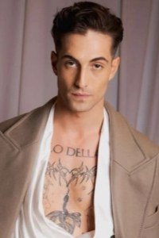
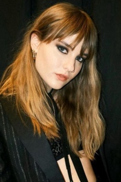
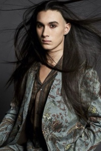
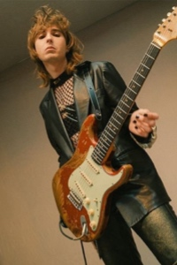
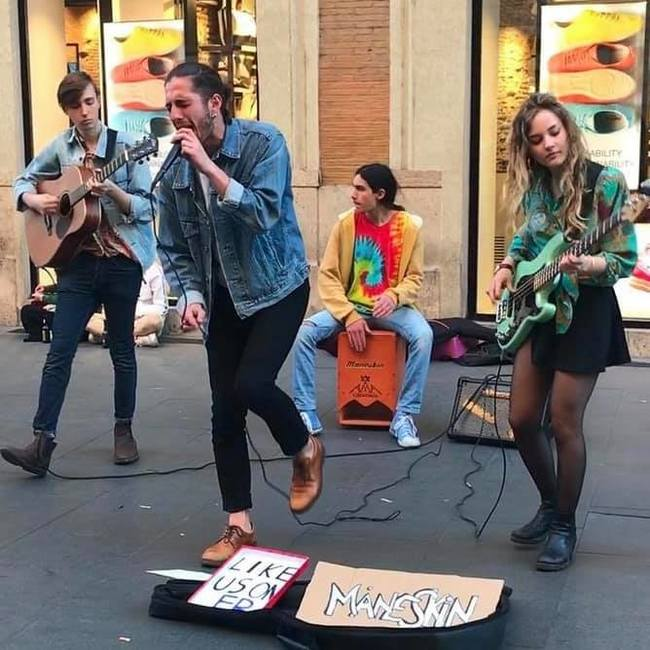

Главная | История | Фильмография | Источники | Магазин | Контакты
Måneskin образовались в 2016 году в Риме, Италия. Четыре друга, познакомившись в школе, решили объединить свои музыкальные таланты. Название группы, "Måneskin", что в переводе с датского означает "лунный свет", отражает темный и мистический образ их музыки.
Харизматичный фронтмен группы, известный своим стилем "glam-rock" и сценической харизмой.
Талантливая бас-гитаристка с яркой индивидуальностью и уникальной манерой игры.
Барабанщик, создающий ритмическое основание для композиций Måneskin.
Гитарист, создающий мощное и динамичное звучание для группы.
Первоначально Måneskin выступали на улицах Рима, играя каверы на известные рок-хиты. Прорывной момент настал в 2021 году на Евровидении с песней "Zitti e buoni".
Måneskin экспериментируют с разными музыкальными жанрами, сочетая роковый грув с поп-элементами, панк-энергией и глам-роком.
Группа вдохновляет молодое поколение, доказывая, что рок-музыка остаётся актуальной и востребованной.